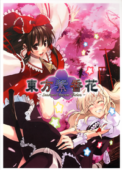

- Welcome to Touhou Wiki!
- Please register to edit. For assistance, check in with our Discord server or IRC channel.
Seasonal Dream Vision
Jump to navigation
Jump to search
| 東方紫香花 Seasonal Dream Vision | |
|---|---|
|
 | |
| Developer | |
| Publisher | |
| Released |
2005-10-01 |
| Genre |
Illustrated Semi-official Fan Book |
| Writers | |
| Comic artists |
D Sato-PON (Kanoneya) |
| Pages |
167 |
| Comes with | |
| ISBN | |
Touhou
Contents[edit]
Comic[edit]
- pg.004: Sakura~ I Wish~
- pg.012: Clover and Promise
- pg.024: Eastern Azalea in May ～Nightingale～
- pg.040: How to Grow a Blue Rose
- pg.048: Evening Primrose - Free Heart
- pg.070: Snowdrop ~Winter's Gift~
- pg.084: Sakuramochi
- pg.102: Scarlet Anemone
- pg.109: A Night of Ten Thousand Flowers
- pg.117: Mountain Green, Blossom Blown
- pg.127: Eternity / Akizakura - cosmos bipinnatus
- pg.135: Seeing Cherry Blossom in mid Autumn
Story[edit]
- pg.171: 六十年ぶりに紫に香る花 (A Beautiful Flower Blooming Violet Every Sixty Years) (written by ZUN)
| ||||||||||||||||||||||||||||